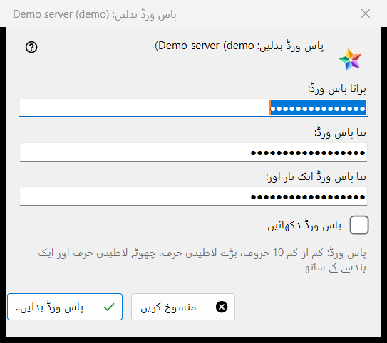
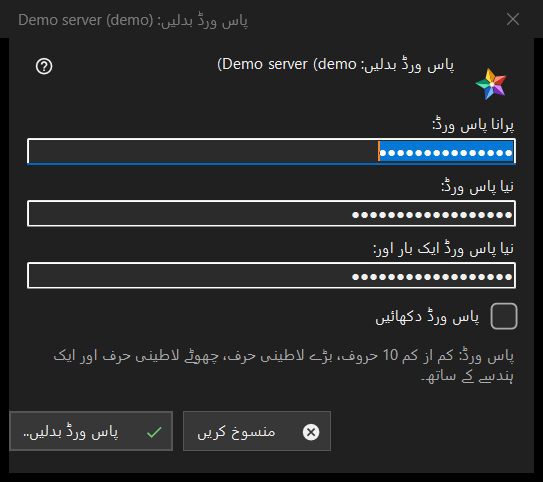

پاس ورڈ بدلیں
یہ کس مقصد کے لیے ہے
ایکسچینج سرور پر آپ کے اکاونٹ کا پاس ورڈ بدلتی ہے۔ یہ وسائل کی فہرست کے میرے آلات حصے میں سرور اندراج کے پاس ورڈ بدلیں.. بٹن سے کھلتی ہے؛ بٹن تب ہی نظر آتا ہے جب وہ سرور آن لائن ہو۔ عنوان میں اکاونٹ کا نام ہوتا ہے۔


اس ترتیب میں
- پرانا پاس ورڈ ٹائپ کریں۔
- نیا پاس ورڈ دو بار ٹائپ کریں۔
- پاس ورڈ بدلیں.. دبائیں؛ منسوخ ونڈو بند کرتا ہے اور کچھ نہیں بھیجتا۔
عناصر
تین خانے
پرانا پاس ورڈ، نیا پاس ورڈ اور نیا پاس ورڈ ایک بار اور؛ پاس ورڈ دکھائیں انہیں دکھاتا ہے۔ ونڈو بند ہونے پر خانے صاف کر دیے جاتے ہیں۔ ونڈو صرف پاس ورڈ جمع کرتی ہے: ویوئر انہیں اسی اندراج کے کنکشن کے ذریعے سرور کو بھیجتا ہے۔
پاس ورڈ کے اصول
نوٹ کہتا ہے: کم از کم 10 حروف، ایک بڑا اور ایک چھوٹا لاطینی حرف اور ایک ہندسہ۔ کچھ بھیجنے سے پہلے ونڈو اس کی جانچ کرتی ہے اور جو حصہ پورا نہ ہو اس کا نام بتاتی ہے، مثلاً (پاس ورڈ 10 حروف سے چھوٹا ہے۔) یا (پاس ورڈ میں کوئی ہندسہ نہیں ہے۔)؛ اس کے علاوہ وہ کہتی ہے (پرانا پاس ورڈ دیں۔) اور (دونوں پاس ورڈ ایک نہیں ہیں۔) سرور وہی اصول لاگو کرتا ہے اور آخری بات اسی کی ہے۔
تبدیلی کے بعد
کامیاب ہو تو اسٹیٹس کہتا ہے: پاس ورڈ بدل گیا۔ یہ کمپیوٹر کام کرتا رہے گا، اور اکاونٹ کے دیگر آلات کو دوبارہ سائن اِن کرنا ہوگا۔ انکار کی وجوہات: پرانا پاس ورڈ نہیں ملا؛ بہت زیادہ کوششیں (ایک منٹ انتظار کر کے دوبارہ کوشش کریں)؛ سرور نے تبدیلی مسترد کر دی؛ سرور سے کنکشن نہیں (جڑ کر دوبارہ کوشش کریں)۔